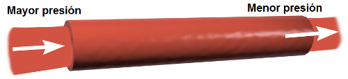
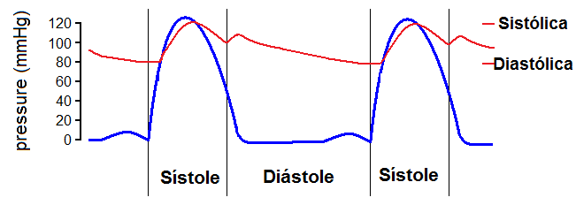

2. Fisiología cardíaca y de la circulación
El papel del sistema cardiovascular en el mantenimiento de la homeostasia (o lacapacidad de un sistema para conservar su medio interno en equilibrio) depende del movimento continuo y controlado de la sangre a través de los cientos de miles de capilares que atraviesas los tejidos y llegan a cada una de las células del cuerpo.
En estado de reposo, el riego sanguíneo de las células es mínimo. Por el contrario, después de una comida, la sangre es desviada al sistema digestivo o, durante el ejercicio físico, a los músculos esqueléticos. La regulación de la presión arterial y del flujo sanguíneo entonces tienen que variar en respuesta a la actividad de las células.
De esta forma, la presión sanguínea es muy importante para la circulación.
Principio fundamental de la circulación: presión sanguínea.
La sangre circula por la misma razón que cualquier otro líquido: un líquido fluye porque hay una diferencia de presión entre dos puntos y tiene que hacerlo de una zona de mayor presión a otra de presión menor.
|  |
| Imagen de BruceBlaus en Wikimedia Commons bajo licencia CC |
La presión debe ser suficiente para llevar la sangre a todos los puntos del cuerpo, además de vencer el rozamiento en los capilares sanguíneos.
La presión debe mantenerse en todo momento dentro de unos niveles óptimos, ya que si es demasiado baja, puede provocar problemas de riego a las células y si es demasiado alta, se incrementa el gasto cardiaco y aumenta el riesgo de derrames sanguíneos.
La presión a la que están sometidos los vasos sanguíneos se origina en el bombeo de sangre del corazón: el ventrículo se contrae y crea la presión que se transmite a las arterias. Esta presión se llama sistólica o máxima.
Las arterias trasportan la sangre y al ser elásticas se dilatan. Al relajarse los ventrículos la presión cae en el ventrículo: presión diastólica o mínima.
Los valores normales son 120/80, medidos en mmHg.
|  |
| Imagen de Phisichimi62 en Wikimedia Commons bajo licencia CC |
A contnuación vamos a estudiar la fisiología del corazón, como artífice principal de que la sangre fluya por todo el sistema cardiovascular a la presión adecuada y cómo es la circulación por el sistema.